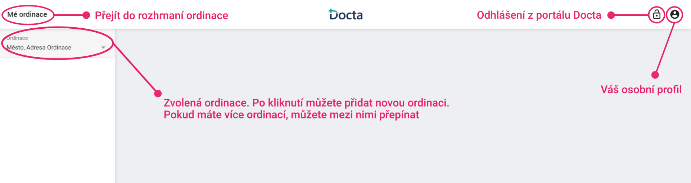
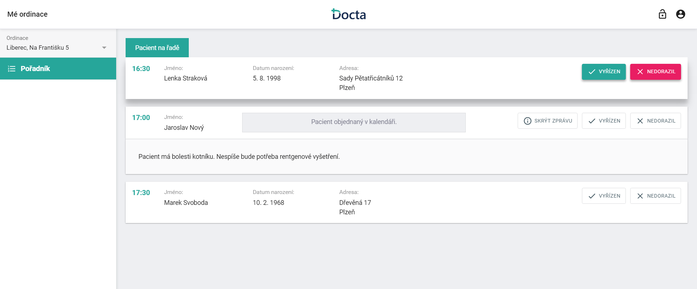
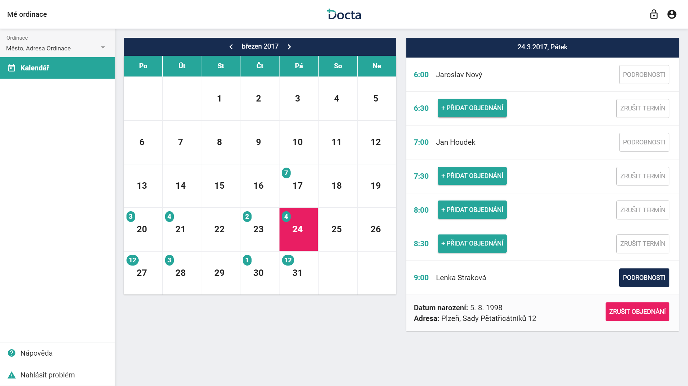
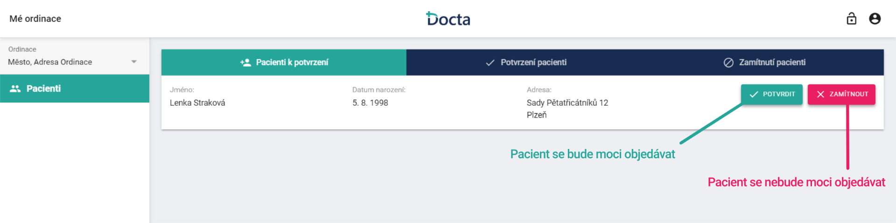
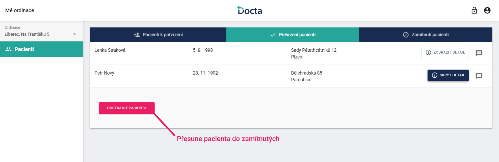
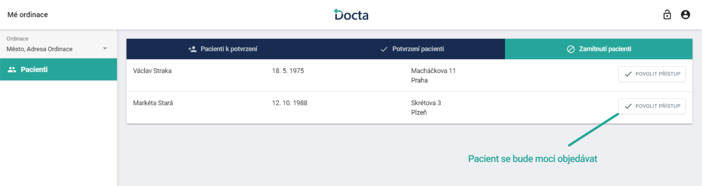
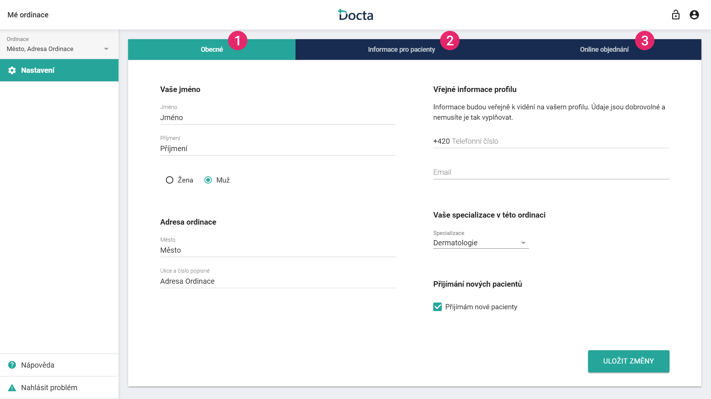

<link rel="import" href="/bower_components/polymer/polymer.html">

<dom-module id="interface-help-view">
    <template>
        <style>

            .main-section {
                max-width: 100%;
                font-weight: lighter;
                padding: 2.5em 5%;
                color: #252526;
                background-color: #fff;
                margin: 2em auto;
                box-shadow: 0 1px 3px rgba(0, 0, 0, 0.12), 0 1px 2px rgba(0, 0, 0, 0.24);
            }

            #patients h2 {
                text-align: left;
                margin: 1.5em 0 0 0;
                font-size: 1.1em;
            }

            section > p {
                font-size: 1.15em;
                line-height: 1.65em;
            }

            section > h1 {
                font-size: 1.6em;
                margin-top: 0;
                letter-spacing: 0.02em;

            }

            img {
                max-width: 100%;
                max-height: 100%;
                border: 1px solid #e2e2e3;
                margin: 2em auto;
            }

        </style>

        <section id="interface" class="main-section">
            <section>
                <h1>Seznámení s rozhraním ordinace</h1>
                <p>V rozhraní ordinacese nachází vše co souvisí s Vaší ordiancí (infromace o ordinaci, objednávání pacientů, kalendář a další).
                    Do rozhraní ordinace se vždy dostanete kliknutím na "Mé Ordinace" v levém horním rohu obrazovky.
                    Pokud máte více ordinací, můžete změnit vybranou ordinaci v navigačním panelu.
            </section>
            <section class="img-section">
                
            </section>
        </section>

        <section id="waitinglist" class="main-section">
            <section>
                <h1>Pořadník</h1>
                <p>V pořadníku vidíte všechny pacienty, kteří jsou objednaní na aktuální datum.
                    Pacienti jsou seřazeni podle času, na který jsou objednaní.
                    Po ošetření pacienta vyberete, zda jste s pacientem vyřízeni a nebo pacient nedorazil.
                    Pokud pacient nedorazí vícekrát, upozorníme ho, případně zablokujeme přístup k objednání ve Vaší ordinaci.
            </section>
            <section class="img-section">
                
            </section>
        </section>

        <section id="calendar" class="main-section">
            <section>
                <h1>Kalendář</h1>
                <p>V kalendáři můžete objednávat pacienty, rušit jednotlivá objednání a termíny.
                    V kalendáři vyberete datum. V pravé části se vám zobrazí objednávací časy na vybraný den.
                    U jednotlivých časů vidíte, zda jsou volné, nebo je tam již objedaný pacient.
                </p>
            </section>
            <section class="img-section">
                
            </section>
        </section>

        <section id="patients" class="main-section">
            <section>
                <h1>Pacienti</h1>
                <p>Pacienti jsou rozděleni do tří skupin.<br>
                    <b>1. Pacienti k potvrzení: </b> Pacienti, kteří Vás požádali o to, aby se u Vás mohli objednat.<br>
                    <b>2. Potvrzení pacienti: </b> Pacienti, kterým jste povolili přístup a mohou se tak u vás objednat.<br>
                    <b>3. Zamítnutí pacienti: </b> Pacienti, kterým jste zamítli přístup a nemohou se tak u vás objednat.<br><br>
                    Seznam pacientů je zvlášť pro každou z vašich ordinací.</p>

            </section>
            <section class="img-section">
                <h2>1. Pacienti k potvrzení</h2>
                
                <h2>2. Potvrzení pacienti</h2>
                
                <h2>3. Zamítnutí pacienti</h2>
                
            </section>
        </section>

        <section id="holiday" class="main-section">
            <section>
                <h1>Dovolená</h1>
                <p>V nastavení dovolené si zvolíte termíny, kdy nebudete ordinovat. Na tyto termíny se nebude možné objednat.
                    Můžete také vyplnit jméno o lékaře, který vás bude při konkrétní dovolené zastupovat.
                    Tato informace bude vidět na Vašem profilu.
                </p>
            </section>
            <section class="img-section">
                <!---->
            </section>
        </section>

        <section id="settings" class="main-section">
            <section>
                <h1>Nastavení</h1>
                <p>Nastavení ordinace je rozděleno do tří skupin.<br>
                    <b>1. Obecné: </b> Zde se nachází obecné informace o Vaší ordinaci.<br>
                    <b>2. Informace pro pacienty: </b> Infromace, které se zobrazí na Vašem profilu.<br>
                    <b>3. Online objednání: </b> Zde lze změnit nastavení vašich online objednávacích hodin.
                    Pokud nemáte online objednání aktivované, můžete ho zde aktivovat.
                    <br>
                    <br> Všechna další případná vysvětlení naleznete přímo v nastavení.</p>


            </section>
            <section class="img-section">
                
            </section>
        </section>
    </template>

    <script>
        Polymer({
            is: 'interface-help-view'
        });
    </script>
</dom-module>
